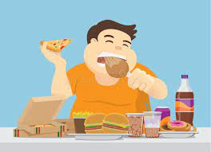
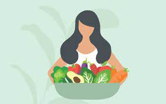
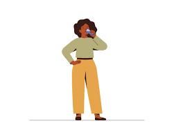

Key 1-Eat Wisely
"Eat food. Not too much. Mostly plants." With these few words, author Micheal Pollam encapsulates simple, time-tested dietary advice. What does he mean?
Eat fresh foods:
Concentrate on eating "real" food-whole, fresh foods that people have been enjoying for milleniums-rather than modern processed foods. Commercially prepackaged foods and fast food from chain resturants usually contain high sugar, salt or fat, which are associated with heart disease, stroke, cancer, and other serious illnesses. When cooking, try steaming, baking, and broiling instead of frying. Try using more herbs and spices to cut down on salt. Make sure meats are properly cooked and never eat spoiled food.

Do not eat too much:
The WHO reports a dangerous worldwide increase in overweight and obese people, often the result of overeating. One study found that in parts of Africa, "there are more children who are overweight than malnourished." Obese children are at risk of present as well as future health problems, including diabetes. Parents, set a good example for your children by limiting your own portions.

Eat mostly plants:
A balanced plate favours a variety of fruits, vegetables and whole grains over meats and starches. Once or twice a week, try substituting fish for meat. Reduce refined foods such as pasta, white bread, and white rice, which have been stripped of much of their natural value. But avoid potentially dangerous fad diets. Parents, protect your childrens health by helping them to acquire a taste for foods that are healthful. For example, give them nuts and thoroughly washed fruits and vegetables for snacks instead of chips or candy.

Drink plenty of fluids:
Adults and children need plenty of water and other unsweetened liquids everyday. Drink more of these during hot weathers and when doing heavy physical work and exercise. Such liquids aid digestion, cleanse your body of poisons, make for healthier skin, and promote weight loss. They help you feel and look your best. Avoid drinking excessive amounts of alcohol and too many sweetened drinks. One soft drink a day can add 15pounds (6.8kg) to your weight in a year.
In some lands, obtaining clean water is hardwork and expensive. Yet drinking it is vital. Tainted water needs to be boiled or chemically treated. Dirty water is said to kill more people than wars or earthquakes; it reportedly kills 4,000 children a day. For infants, the WHO recommends only breastfeeding for the next 6 months, then breast feeding plus other foods until at least the age of two.